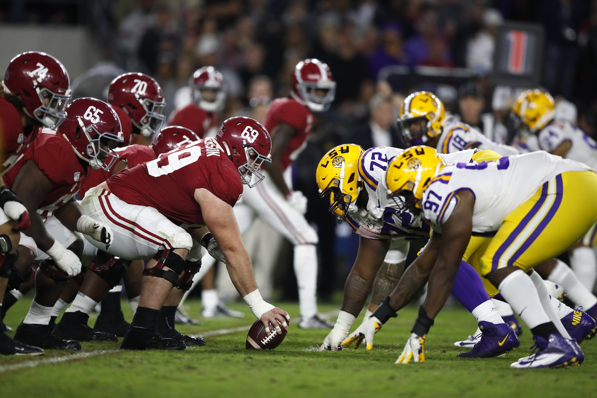
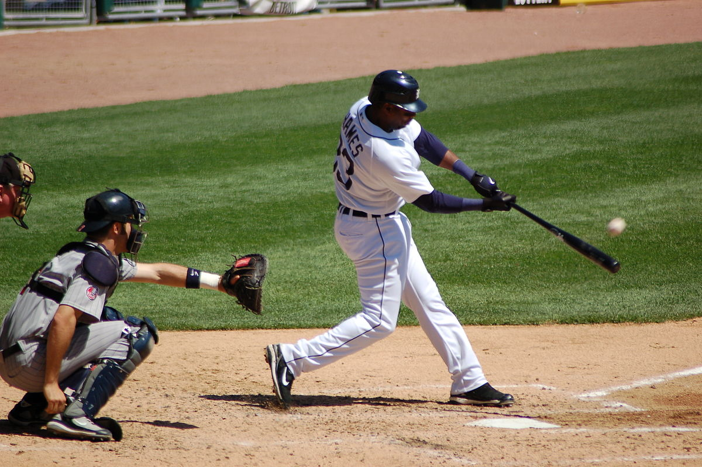
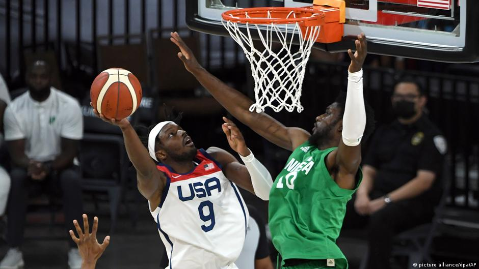
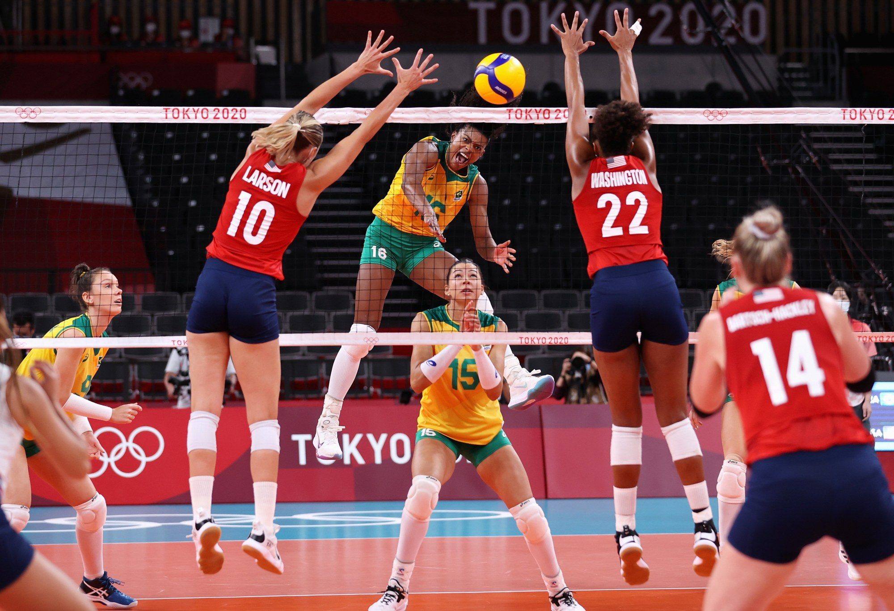
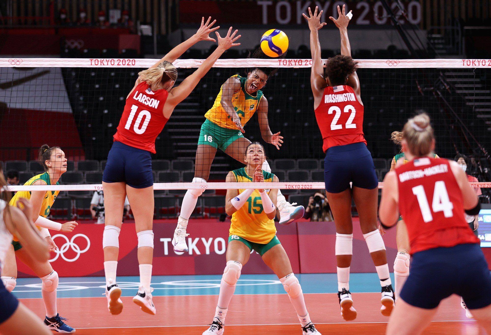
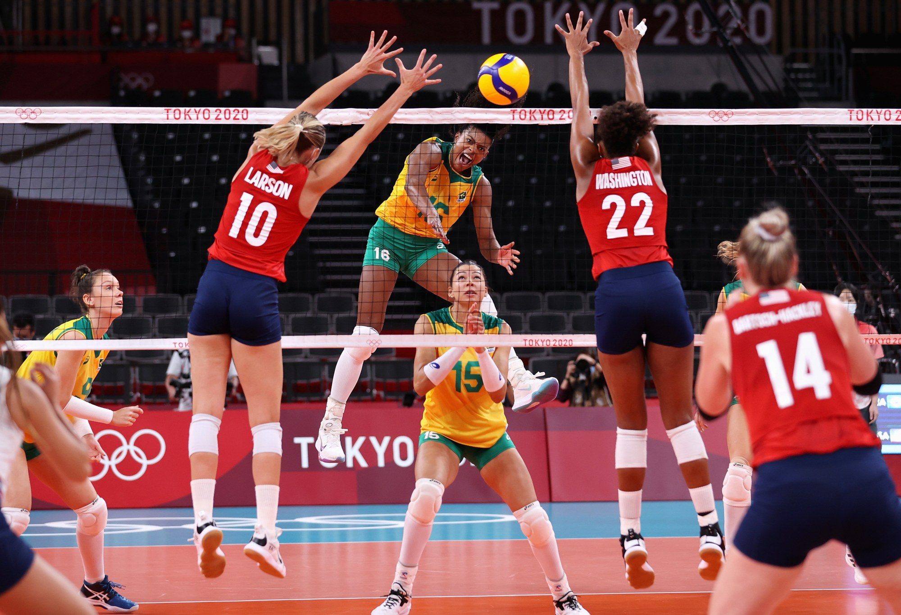

Team Sports



 


Among the most popular team sports are football, baseball, basketball, and soccer.
- Football
-
a team sport played with a oval-shaped football by two teams of 11
players.
Football teams in Georgia: - Baseball
-
a game played with a bat and a ball between two teams that take
turns batting and fielding.
Baseball teams in Georgia: - Basketball
-
a team sport played by two teams, most commonly of five players
each, with the primary objective of shooting a basketball through
the defender's hoop while preventing the opposing team from shooting
through their own hoop.
Basketball teams in Georgia: - Soccer
-
a team sport played with a spherical ball by two teams of 11
players.
Soccer teams in Georgia: - Volleyball
-
a team sport in which two teams of six players are separated by a
net. Each team tries to score points by grounding a ball on the
other team's court under organized rules.
Volleyball teams in Georgia: